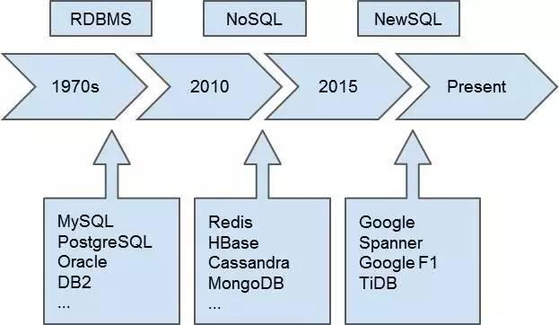

分布式数据库
何骞2018-4-12
DB
单机数据库
把数据存下来
满足数据的计算需求
随着数据规模爆炸式增长
分布式数据库走上神坛
Nosql （MongoDB 分片，HBase）
RDBMS + 中间件（Mycat，Cobar，TDDL ），实现读写分离、垂直拆库、水平分表
痛点
实现容量的水平扩展
但代价是牺牲事务 或是简化数据模型，只提供简单的KV模型，降低对业务的支撑
分库后 -> 业务复杂（例如查询后需要数据合并）
对sql进行阉割，不支持一些复杂sql（例如复杂的join操作）
水平扩容需要人工参与，甚至停服，成本巨大（例如MyCat）
NewSql
随着Google的Spanner和F1论文发布， 让业界第一次看到了关系模型和 NoSQL 的扩展性在一个大规模生产系统上融合的可能性。
高可用
支持自动扩容缩容
支持OLAP + OLTP
全面兼容mysql协议
架构剖析


容灾

性能监控


干货：踩坑日常

节点大量挂掉

热点问题
自增id
单调递增索引（例如时间戳）
分布式数据库性能一定 > 单机？
数据量低于5000W的场景用不到
单机数据库能满足的场景也用不到
未来的数据库
势必会是OLAP和OLTP的融合
高可用和自动化运维会成为标配
Raft等一致性算法取代主从日志同步
云化
博客:7le.top 里有选型Tidb时的测评和完整踩坑日常
Thanks！